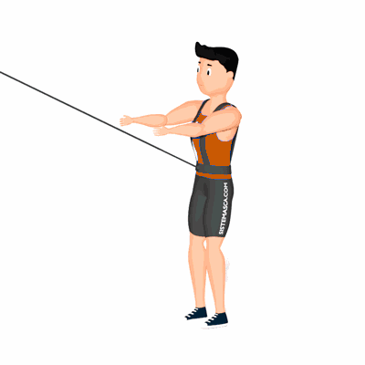

Agachamento com Tração Elástica

Exercício de resistência elástica que deixa os glúteos firmes e define as coxas e o abdômen, pois trabalha várias regiões do corpo ao mesmo tempo. Outro benefício muito importante é a melhora da mobilidade funcional, como também auxilia a evitar eventuais fraturas.
Ficha Técnica
Tipo: Funcional
Grupo Muscular: Perna
Aparelho: Nenhum
Músculos: Nenhum
Como realizar
- Prenda frontalmente o colete de tração elástica em seu tronco;
- Estenda os braços à frente em uma altura em que eles estejam em paralelo ao solo;
- Posicione os pés separadamente em uma largura semelhante à dos ombros;
- Com a coluna reta e abdome contraído, desça o corpo flexionando os joelhos até que a coxa fique em um ângulo de 90 graus, em paralelo ao solo;
- Os joelhos não deveram ultrapassar a linha dos pés;
- Com a força das coxas, empurre o corpo para cima retornando à posição inicial e repita os movimentos.
 RC STORE
RC STORE